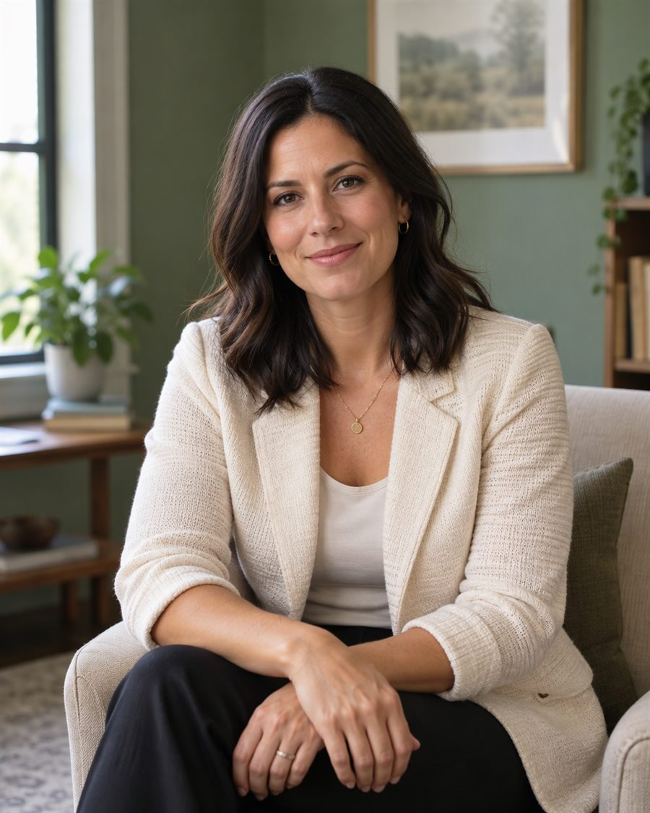
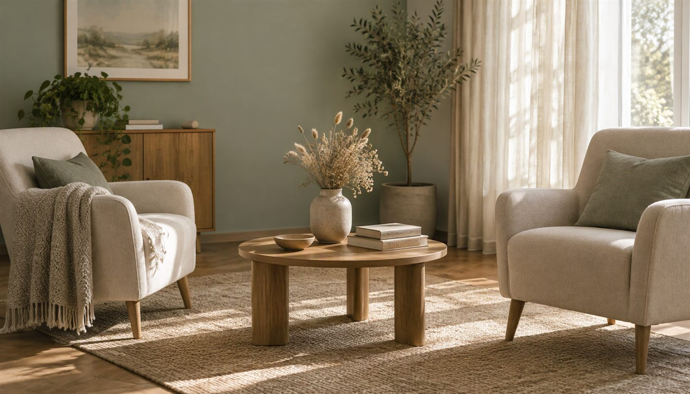

Psikolog ile Tanışın
Çalışma yaklaşımım, uzmanlık alanlarım ve terapi sürecine bakışım hakkında bilgi.
Beni tanıyın01Oyun & Güven
Oyun, resim ve hikâye yoluyla çocuğun duygularını güvenle ifade ettiği; okul, arkadaşlık ve öfke yönetiminde desteklendiği bir alan. Ebeveynlerle düzenli görüşmelerle süreç birlikte takip edilir.
Çocuk Terapisi02Kimlik & Değişim
Kimlik arayışı, sınav kaygısı, akran ilişkileri ve ekran kullanımı gibi bu dönemin zorluklarında yargılamadan dinleyen bir alan. Genç ile ebeveyn arasında ortak bir dil kurulur.
Ergen Danışmanlığı03Denge & Dönüşüm
İş stresi, tükenmişlik, ilişkiler ve yaşam geçişlerinde; hedefe yönelik, kanıta dayalı ve size özel bir terapi süreci. İlk görüşmede hedefiniz netleşir, çalışma planı birlikte belirlenir.
Yetişkin Terapisi04Hatırlama & Huzur
Emeklilik, kayıplar, yalnızlık ve zihinsel zindelik konularında; sabırlı, saygılı ve yakınları da sürece katan bir destek. Görüşmeler kişinin kendi temposunda ilerler.
Yaşlı Birey DanışmanlığıKaydırarak keşfedin
Size en yakın hissettiren yoldan ilerleyebilirsiniz.

Çalışma yaklaşımım, uzmanlık alanlarım ve terapi sürecine bakışım hakkında bilgi.
Beni tanıyınYetişkin, çocuk, ergen, yaşlı birey, çift ve aile için yaşa ve ihtiyaca göre şekillenen destek.
Hizmetleri görün
Yaş grubunuza göre hazırlanmış, tanı koymayan kısa bir farkındalık ve dikkat değerlendirmesi.
Mini teste başlayınHakkımda
Ben Alperen; İstanbul Ümraniye'de klinik psikolog olarak yetişkin, çocuk, ergen ve yaşlı bireylerle çalışıyorum. Bilimsel yöntemleri danışanın kendi temposuyla buluşturan; yargısız, sıcak ve güvenli bir alan kurmaya özen gösteriyorum. Çalışmalarımda bilişsel davranışçı terapi, EMDR ve şema terapi yaklaşımlarından yararlanıyor; her danışan için ihtiyaca göre şekillenen bir yol izliyorum.
İlk görüşmeden itibaren kendinizi güvende hissettiğiniz, yargılanmadan dinlendiğiniz bir çerçeve kurarız.
BDT, EMDR ve şema terapi temelli çalışır; süreci düzenli olarak birlikte değerlendiririz.
Hedefi birlikte belirler, adımları sizin hızınıza göre planlarız. Değişim, güvenle ve istikrarla gelir.
İlk adım
Kısa bir ön görüşmeyle ihtiyacınızı birlikte değerlendirelim; size uygun yolu birlikte belirleyelim.
Her alanda süreç, kişinin yaşına ve ihtiyacına göre şekillenir.
İki kısa bölümden oluşur: yaş grubunuza göre farkındalık soruları ve birkaç dikkat egzersizi. Tanı koymaz; yalnızca kendinizi dinlemeniz için bir başlangıç sunar.
Yalnızca iletişim için gerekli bilgileri paylaşın.